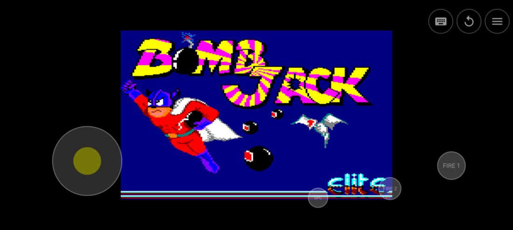

Acpc
The Amstrad CPC 464, 664 and 6128, the 6128 Plus and the GX4000 console, on an Android phone or tablet. It boots the real firmware, runs real games from discs, tapes and cartridges — and starts them by itself.
Les Amstrad CPC 464, 664 et 6128, le 6128 Plus et la console GX4000, sur un téléphone ou une tablette Android. Il démarre le vrai firmware, fait tourner les vrais jeux depuis disquettes, cassettes et cartouches — et les lance tout seul.
Amstrad CPC 464, 664 និង 6128, 6128 Plus និងម៉ាស៊ីនហ្គេម GX4000 នៅលើទូរស័ព្ទ ឬថេប្លេត Android។ វាចាប់ផ្តើមដោយ firmware ពិតប្រាកដ ដំណើរការហ្គេមពិតៗពី disk, tape និង cartridge — ហើយបើកហ្គេមទាំងនោះដោយខ្លួនឯង។

Pick a game. It starts.
On a real CPC you had to know the incantation: RUN"DISC, |CPM, or just RUN" and the play button of the tape deck. Acpc reads the disc catalogue and the AMSDOS file headers to work out which file is the loader, and types the right command for you. A tape gets RUN" on a machine without a disc ROM, as on a 464 of the day.
It also picks the machine. A game cartridge boots a GX4000; a disc or tape written for the Plus is recognised and started on a 6128 Plus. Tape loading can run at full emulation speed while the motor turns, so the wait of 1985 is optional.
What it runs.
| Machine | Notes |
|---|---|
| CPC 464 | OS and BASIC 1.0. Tapes, as in the day. |
| CPC 664 | OS and BASIC 1.1, with disc drive. |
| CPC 6128 | OS and BASIC 1.1, 128 KB, discs and CP/M games. |
| CPC 6128 Plus | Boots its system cartridge and runs discs and tapes with the ASIC available to programs. |
| GX4000 | Boots straight from the game cartridge; no ROM needed. |
| Format | Contents |
|---|---|
| .dsk | Disc images. Discs written by games — saved games, high scores — are kept. |
| .cdt | Tapes, including multi-side tapes. |
| .cpr / .bin | Cartridges, or raw dumps. |
| .sna | Snapshots, plain or zipped. |
Made for a touch screen.
Controls that fit the game
A touch joystick and fire buttons with movable layouts, an on-screen CPC keyboard, the Android keyboard for typing text, and Bluetooth or USB keyboards and gamepads.
A game library
Local files, favourites, and remote servers: any HTTP directory index or an archive.org collection, browsable and searchable in the app. One tap downloads, caches and starts the game.
Multi-disc games
The in-game “Change disc…” and “Change tape…” menus offer the other discs or sides of the set, from the library or downloaded from the server the game came from.
Save states and comfort
Save states, adjustable speed, scaling modes, scanlines and screen orientation.
The Plus hardware
The Plus ASIC is emulated: hardware sprites, 4096 colours, soft scrolling, split screen, raster interrupt and DMA sound.
Tested against real software
About 700 titles went through automated harnesses: 453 disc images, 185 tapes, 38 cartridge images — including all 26 GX4000 games — and 20 productions from 2011–2020, with every failure traced to its cause.
The Amstrad ROMs are not included: you import your own copies from the app, and they are recognised by their content. GX4000 games need none.
Choisissez un jeu. Il démarre.
Sur un vrai CPC, il fallait connaître la formule : RUN"DISC, |CPM, ou simplement RUN" et la touche lecture du magnétophone. Acpc lit le catalogue de la disquette et les en-têtes AMSDOS des fichiers pour trouver le chargeur, et tape la bonne commande à votre place. Une cassette reçoit RUN" sur une machine sans ROM disque, comme sur un 464 de l’époque.
Il choisit aussi la machine. Une cartouche de jeu démarre une GX4000 ; une disquette ou une cassette écrite pour le Plus est reconnue et lancée sur un 6128 Plus. Le chargement des cassettes peut tourner à pleine vitesse d’émulation tant que le moteur tourne : l’attente de 1985 est facultative.
Ce qu’il fait tourner.
| Machine | Remarques |
|---|---|
| CPC 464 | OS et BASIC 1.0. Les cassettes, comme à l’époque. |
| CPC 664 | OS et BASIC 1.1, avec lecteur de disquettes. |
| CPC 6128 | OS et BASIC 1.1, 128 Ko, disquettes et jeux CP/M. |
| CPC 6128 Plus | Démarre sa cartouche système et fait tourner disquettes et cassettes, l’ASIC restant accessible aux programmes. |
| GX4000 | Démarre directement sur la cartouche de jeu ; aucune ROM nécessaire. |
| Format | Contenu |
|---|---|
| .dsk | Images de disquettes. Les disquettes écrites par les jeux — parties sauvegardées, meilleurs scores — sont conservées. |
| .cdt | Cassettes, y compris à plusieurs faces. |
| .cpr / .bin | Cartouches, ou copies brutes. |
| .sna | Snapshots, tels quels ou zippés. |
Pensé pour un écran tactile.
Des commandes adaptées au jeu
Un joystick tactile et des boutons de tir aux dispositions déplaçables, un clavier CPC à l’écran, le clavier Android pour saisir du texte, et les claviers et manettes Bluetooth ou USB.
Une bibliothèque de jeux
Fichiers locaux, favoris et serveurs distants : n’importe quel index de répertoire HTTP ou une collection archive.org, à parcourir et à interroger depuis l’application. Un toucher télécharge, met en cache et lance le jeu.
Jeux sur plusieurs disquettes
Les menus « Changer de disquette… » et « Changer de cassette… » proposent en cours de jeu les autres disquettes ou faces du jeu, depuis la bibliothèque ou téléchargées sur le serveur d’origine.
États instantanés et confort
Sauvegardes d’état, vitesse réglable, modes de mise à l’échelle, lignes de balayage et orientation de l’écran.
Le matériel du Plus
L’ASIC du Plus est émulé : sprites matériels, 4096 couleurs, défilement fin, écran partagé, interruption de trame et son DMA.
Testé sur de vrais logiciels
Environ 700 titres sont passés par des bancs de test automatisés : 453 images de disquettes, 185 cassettes, 38 images de cartouches — dont les 26 jeux GX4000 — et 20 productions de 2011 à 2020, chaque échec étant remonté jusqu’à sa cause.
Les ROM Amstrad ne sont pas fournies : vous importez vos propres copies depuis l’application, qui les reconnaît à leur contenu. Les jeux GX4000 n’en demandent aucune.
ជ្រើសរើសហ្គេម។ វាចាប់ផ្តើមភ្លាម។
នៅលើ CPC ពិតប្រាកដ អ្នកត្រូវចាំពាក្យបញ្ជាឱ្យត្រូវ៖ RUN"DISC, |CPM ឬគ្រាន់តែ RUN" រួចចុចប៊ូតុង play នៃម៉ាស៊ីនចាក់ tape។ Acpc អានបញ្ជីឯកសារនៅលើ disk និង header ឯកសារ AMSDOS ដើម្បីរកមើលថាឯកសារណាជា loader ហើយវាយពាក្យបញ្ជាត្រឹមត្រូវជំនួសអ្នក។ សម្រាប់ tape វាវាយ RUN" លើម៉ាស៊ីនដែលគ្មាន ROM សម្រាប់ disk ដូចនៅលើ 464 កាលពីសម័យនោះ។
វាក៏ជ្រើសរើសម៉ាស៊ីនឱ្យអ្នកដែរ។ cartridge ហ្គេមចាប់ផ្តើម GX4000 ចំណែក disk ឬ tape ដែលសរសេរសម្រាប់ Plus ត្រូវបានស្គាល់ ហើយបើកនៅលើ 6128 Plus។ ការផ្ទុក tape អាចដំណើរការក្នុងល្បឿនអតិបរមារបស់ emulator ខណៈដែលម៉ូទ័រកំពុងវិល ដូច្នេះការរង់ចាំដូចឆ្នាំ 1985 មិនមែនជាការចាំបាច់ទៀតទេ។
អ្វីដែលវាអាចដំណើរការបាន។
| ម៉ាស៊ីន | កំណត់សម្គាល់ |
|---|---|
| CPC 464 | OS និង BASIC 1.0។ ប្រើ tape ដូចសម័យដើម។ |
| CPC 664 | OS និង BASIC 1.1 ជាមួយឧបករណ៍អាន disk។ |
| CPC 6128 | OS និង BASIC 1.1, 128 KB, disk និងហ្គេម CP/M។ |
| CPC 6128 Plus | ចាប់ផ្តើមពី cartridge ប្រព័ន្ធរបស់វា ហើយដំណើរការ disk និង tape ដោយកម្មវិធីនានាអាចប្រើ ASIC បាន។ |
| GX4000 | ចាប់ផ្តើមដោយផ្ទាល់ពី cartridge ហ្គេម ដោយមិនត្រូវការ ROM ទេ។ |
| ទម្រង់ | មាតិកា |
|---|---|
| .dsk | ឯកសារ image របស់ disk។ disk ដែលហ្គេមបានសរសេរទិន្នន័យចូល — ហ្គេមដែលបានរក្សាទុក ពិន្ទុខ្ពស់បំផុត — ត្រូវបានរក្សាទុកមិនបាត់។ |
| .cdt | tape រួមទាំង tape ដែលមានច្រើនមុខ។ |
| .cpr / .bin | cartridge ឬច្បាប់ចម្លងដើមដោយផ្ទាល់ (raw dump)។ |
| .sna | snapshots ធម្មតា ឬបង្ហាប់ជា zip។ |
បង្កើតឡើងសម្រាប់អេក្រង់ប៉ះ។
ការបញ្ជាដែលសមនឹងហ្គេម
មាន joystick ប៉ះ និងប៊ូតុងបាញ់ដែលអាចផ្លាស់ទីទីតាំងបាន ក្តារចុច CPC នៅលើអេក្រង់ ក្តារចុច Android សម្រាប់វាយអត្ថបទ ព្រមទាំងក្តារចុច និង gamepad តាម Bluetooth ឬ USB។
បណ្ណាល័យហ្គេម
ឯកសារក្នុងឧបករណ៍ ហ្គេមដែលចូលចិត្ត និង server ពីចម្ងាយ៖ HTTP directory index ណាមួយ ឬបណ្តុំឯកសារនៅលើ archive.org ដែលអាចរុករក និងស្វែងរកបាននៅក្នុងកម្មវិធី។ ប៉ះតែម្តង វាទាញយក រក្សាទុកក្នុង cache និងចាប់ផ្តើមហ្គេមភ្លាម។
ហ្គេមដែលមាន disk ច្រើន
ម៉ឺនុយ “Change disc…” និង “Change tape…” ក្នុងពេលលេង ផ្តល់ជូននូវ disk ឬមុខ tape ផ្សេងទៀតនៃឈុតហ្គេមនោះ ពីបណ្ណាល័យ ឬទាញយកពី server ដែលហ្គេមនោះបានមកពី។
Save states និងភាពងាយស្រួល
save states, ល្បឿនដែលអាចកែតម្រូវបាន, របៀបពង្រីករូបភាព, scanlines និងទិសដៅអេក្រង់។
ផ្នែករឹងរបស់ Plus
ASIC របស់ Plus ត្រូវបាន emulate៖ sprites ផ្នែករឹង, ពណ៌ 4096, ការរំកិលអេក្រង់យ៉ាងរលូន, អេក្រង់បំបែក, raster interrupt និងសំឡេង DMA។
បានសាកល្បងជាមួយកម្មវិធីពិតៗ
ហ្គេម និងកម្មវិធីប្រហែល 700 ត្រូវបានឆ្លងកាត់ការធ្វើតេស្តស្វ័យប្រវត្តិ៖ image disk 453, tape 185, image cartridge 38 — រួមទាំងហ្គេម GX4000 ទាំង 26 — និងស្នាដៃ 20 ពីឆ្នាំ 2011–2020 ហើយរាល់កំហុសនីមួយៗត្រូវបានតាមដានរហូតដល់រកឃើញមូលហេតុ។
ROM របស់ Amstrad មិនត្រូវបានភ្ជាប់មកជាមួយទេ៖ អ្នកនាំចូលច្បាប់ចម្លងផ្ទាល់ខ្លួនរបស់អ្នកពីក្នុងកម្មវិធី ហើយកម្មវិធីស្គាល់ ROM ទាំងនោះតាមខ្លឹមសាររបស់វា។ ហ្គេម GX4000 មិនត្រូវការ ROM ទាល់តែសោះ។
A look inside.L’émulateur en images.Emulator តាមរយៈរូបភាព។

How it is built.
| core | The emulation, in pure JVM Kotlin and unit-tested: Z80 CPU, gate array, CRTC, PPI, AY-3-8912 sound, µPD765 floppy controller, Plus ASIC, cartridges, disc and tape formats, snapshots, keyboard, joystick and save states. |
| app | The Android application: emulator loop, input, video, audio, storage, network and interface. |
| Tests | The unit tests run in seconds and need nothing outside the repository. Integration harnesses boot the real firmware and run batches of games. |
| Docs | A user manual with screenshots, a compatibility report, and an architecture guide that goes through the emulator chip by chip. |
Comment c’est construit.
| core | L’émulation, en Kotlin JVM pur et couverte par des tests unitaires : processeur Z80, gate array, CRTC, PPI, son AY-3-8912, contrôleur de disquette µPD765, ASIC du Plus, cartouches, formats de disquettes et de cassettes, snapshots, clavier, joystick et états instantanés. |
| app | L’application Android : boucle d’émulation, entrées, vidéo, audio, stockage, réseau et interface. |
| Tests | Les tests unitaires s’exécutent en quelques secondes et n’ont besoin de rien hors du dépôt. Des bancs d’intégration démarrent le vrai firmware et font tourner des lots de jeux. |
| Docs | Un manuel utilisateur illustré, un rapport de compatibilité, et un guide d’architecture qui parcourt l’émulateur puce par puce. |
របៀបដែលវាត្រូវបានបង្កើត។
| core | ផ្នែក emulate ទាំងមូល សរសេរដោយ Kotlin JVM សុទ្ធ និងមាន unit tests គ្របដណ្តប់៖ CPU Z80, gate array, CRTC, PPI, សំឡេង AY-3-8912, ឧបករណ៍បញ្ជា floppy µPD765, ASIC របស់ Plus, cartridge, ទម្រង់ disk និង tape, snapshots, ក្តារចុច, joystick និង save states។ |
| app | កម្មវិធី Android៖ រង្វិលជុំរបស់ emulator, ការបញ្ចូល, វីដេអូ, អូឌីយ៉ូ, ការផ្ទុកទិន្នន័យ, បណ្តាញ និងផ្ទាំងប្រើប្រាស់។ |
| ការធ្វើតេស្ត | unit tests ដំណើរការក្នុងរយៈពេលតែប៉ុន្មានវិនាទី ហើយមិនត្រូវការអ្វីនៅក្រៅឃ្លាំងកូដទេ។ ការធ្វើតេស្ត integration ចាប់ផ្តើម firmware ពិតប្រាកដ ហើយដំណើរការហ្គេមជាច្រើនជាបាច់ៗ។ |
| ឯកសារ | សៀវភៅណែនាំអ្នកប្រើប្រាស់ដែលមានរូបថតអេក្រង់ របាយការណ៍ភាពត្រូវគ្នា (compatibility) និងមគ្គុទ្ទេសក៍ស្ថាបត្យកម្មដែលពន្យល់ emulator មួយ chip ម្តងៗ។ |